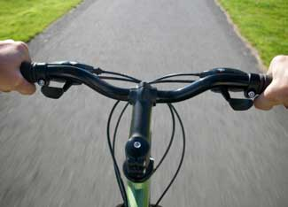

Maybe the gleam of aluminum and shiny rubber broke your “thriftbone.” Maybe that rusty old Western Flyer finally gave out on you. Maybe you'd just like to use a saddle that hasn't been broken in by someone else's butt. For whatever reason, you've decided to purchase a new bike.
Great idea! For about $450, you can snag yourself a reliable vehicle that can take you as far as your legs can manage. That may sound like a lot of money up front, especially when you can get a new bike from Wal-Mart for less than $200. The key term, though, is reliable. Bikes sold from discount stores are, by and large, poorly made and sloppily assembled; often they can’t even be repaired. Buying a new cheap bike every year or so (to replace a broke one) versus buying a solidly built bike that can last decades quickly becomes a losing proposition.
And besides, that $450 is, for the most part, a one-time expense. That a new bike won’t require any $4 a gallon gas, ever. Beyond routine maintenance and the occasional repair job, you’ll have a fun, reliable ride for the long term. The more you ride it, the more you’ll save and the better shape you’ll be in.
If new wheels aren’t in the cards for you right now, odds are you can find a quality used bike.
Before you slap down your hard-earned money for a bike, though, ponder why, where and how you're riding or want to ride. Answering those questions will help you figure out what bike will best fit your needs.
So, why do you want to ride - to exercise, commute to work, run errands or just for leisure? Where do you want to ride - potholed city streets, open roads, gravel bike trails, maybe a mix of environments? Finally, how do you like to ride - in an upright position, leisurely paced or always leaning forward, in race mode wherever you go?
If your main terrain is pockmarked streets and/or bike trails, a mountain bike will probably be your best bet. Chances are you won't need a dual-suspension bike, but you would feel better on a hardtail with front shock absorbers if the streets are especially bad. My main commuting/errand running/around town bike is a hardtail mountain bike with a right (non-shock absorper) front fork and semi-slick tires. Semi-slick tires grab blacktop better than knobby mountain bike tires, so if you’ll be riding in town, get a pair of those. Kona, Specialized, Trek and many other manufacturers make excellent mountain bikes that sell for $500 or less. Check out Mountain Bike Review for ratings on the latest models.
If you take to the open road more often, you'll probably want a road or touring bike. These feature drop handlebars, larger wheels and narrower tires than mountain bikes, and have different frame geometry than other bikes. You know the noodle-looking handlebars that were on most ’70s Schwinns? Those are drop bars, but modern drop bars are more comfortable than those oldies. The price on entry-level road bikes can be a bit higher than entry-level mountain bikes, but check around at your local bike shop(s) - they may have a previous year's model on sale for cheap. Road Bike Review has ratings on the latest models.
If you're just into leisurely riding around town and like the upright riding position, check into a cruiser bike. These are curvalicious, fairly heavy balloon-tired bikes with swept back handlebars that are fun to ride as long as the road is more or less flat. Many of them come equipped with stylish yet functional fenders, which is one less accessory to buy (see below).
A closely related bike style is the city bike, which is a bit lighter than a cruiser, with narrower tires and more/higher gearing. Ask your local bike shop about these styles, and see if any pique your interest.
The frame style is important, but that's not all you're buying. You're getting a whole heap of components that connect the frame and the road to your butt and hands, plus help you go and stop. Most modern bicycle components - shifting levers, brake levers, brakes, derailleurs, cranksets, etc. - are high quality and durable. The main difference between high- and low-end parts is weight. The more you pay, the lighter (and, generally, slightly more durable) the components. Having lighter stuff on your bike makes it easier to push up hills, but the components really shouldn’t be the deciding factor in your bike purchase.
Regardless what material the frame is made of, how feather light the action on the shifters is or whether the tires leave trails of real flame wherever they go, you're not going to ride the bike if it's uncomfortable. Fortunately, most frames - as long as they're appropriately sized for the rider's height - can be made to fit almost anybody's particular body geometry. This is, of course, absolutely specific to each person, so the only way you're going to figure out what’s best for you is to sit on a few bikes and see what's comfortable and what needs adjusting (handlebar height, saddle height, etc.). Most bike shops will help fit the bike to you; some will even loan you a bike for a day so you have time to figure out if it's right for you.
Once you have your new bike, hit the road. But it may not be long before you want a few accessories, particularly if you're using the bike for commuting. Full-coverage fenders are a virtual necessity, and a rack with pannier bags can be a convenient relief from wearing a backpack while you ride. A bell is handy and fun to ring at squirrels. Lights are a must if you ride at night or early morning. If you have a caffeine monkey on your back, you can even buy a handlebar-mounted cupholder. Finally, it goes without saying, but buy (and use!) a bike helmet. They save lives. 'Nuff said.
All right, you bought it and tricked it out. Now ride it. But be aware that the components on the bike may give you trouble a little sooner than you expect: brakes might stick, you may be unable to shift to the lowest or highest gear, the wheels may feel too "flexy," etc. These are pretty much normal symptoms of your bike breaking in, and they typically happen within the first 200 miles or so of riding. Once your bike starts to feel a bit off, take it back to the shop where you bought it. Most reputable bike shops will do post break-in service for free. Even if it's not free, the small charge to get it done will be well worth it in the long run. (And if they do, be sure to become a loyal customer.)
So all that's left is to ride it and, heaven forbid, fix things if they break. Taking the bike into a knowledgeable mechanic is fine, but it can get expensive. Learning to perform basic maintenance (tire changing, chain lubing,) is fun and can save you money. Here are a few great online resources: Park Tool’s repair help section, articles from the late bike expert Sheldon Brown and the Bicycle Mechanics section of Bike Forums.
Sometimes though - like, speaking from experience, when you're in front of your half-disassembled bike with hands coated in grime and grease and your wife won’t let you in the house (much less near the computer) - you need a hardcopy helper, so here are some excellent paper-based references:
Zinn & the Art of Mountain Bike Maintenance
Bicycling Magazine's Basic Maintenance and Repair
Bicycling Magazine's Complete Guide to Bicycle Maintenance and Repair
|
 ISTOCKPHOTO/TODD BATES You can find a reliable ride that will take you places, without any gasoline. |
|
|